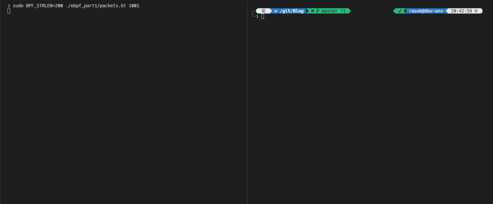
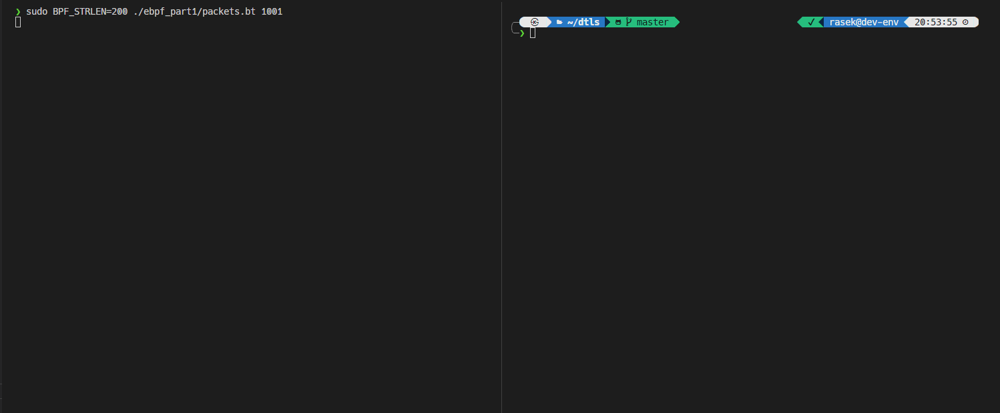

My eBPF journey part 1: Using bpftrace to print packets
As many of you probably know eBPF is a great technology which allows you to run code inside the Linux kernel. eBPF capabilities can be used best for observability, networking and security use cases. My goal is to test the networking aspect of eBPF.
As a first step I used bpftrace to make the start easier. My script prints IPv4 and IPv6 packets when received or sent. My intension is to develop more little programs and scripts around networking with eBPF and make them understand. If you want more details of the next post check out Next steps section.
Brief introduction of eBPF
If you want more detailed description of eBPF I recommend you to check the following links: ebpf.io and cilium bpf guide.
Based on a very simple definition eBPF allows you to run code inside the Linux kernel in a save way without developing a kernel module. eBPF programs are byte codes run as a virtual machine inside the kernel. The code itself has been verified by the loader before running it to prevent crash inside the kernel. Besides the advantage of the safety, eBPF programs compiled with Just-In-Time (JIT) compiler to run as efficient as possible.
eBPF programs have two part:
- the code running inside a safe virtual machine in the kernel and activate when the attached event happens, which can be either in the kernel or in the user space
- the user space component to process the collected data
There are special data types (eBPF maps) to communicate between these two components.
Fortunately you don’t have to write eBPF byte code, but you can use a restricted version of C programming language to write your code running inside the kernel. For the user space component there are frameworks to load and use eBPF code in almost all of the popular programming languages.
Prerequisites
There are quite few prerequisites to run eBPF programs on your machine. The most important one is that you need root privileges to load the program to your kernel. This can be modified by settings which allow for any user to load eBPF programs, but I don’t recommend to do that because I assume you don’t want that someone else is able to customize your kernel.
Use at least a 4.9 version of Linux kernel and build with specific options.
Install eBPF
Kernel headers should be available for eBPF. eBPF package name is differ for distribution, mine is libbpf-dev.
For more details check out the project’s repository.
sudo apt-get install -y libbpf-dev linux-headers-$(uname -r)
Install bpftool
BCC is a popular framework for working with eBPF. It contains a bunch of useful tools for networking and tracing: examples. Installation guide
bpftool is about manipulation of eBPF programs and maps. You can generate BTF (BPF Type Format) which is the metadata format encoding the debug info related to BPF program/map.
sudo apt-get install -y bpfcc-tools bpftool
Install bpftrace
bpftrace is the easiest way to get started with eBPF. It uses a C like scripting language format to develop programs. Check out the language basics. Installation guide
sudo apt-get install -y bpftrace
Check commands
Try the commands below to check if your installation works properly.
The first command’s output is the content of your kernel BTF file in a C header file format. You should include this if you write standalone eBPF program, otherwise with bpftrace it is done automatically.
The second command lists all of the points where you can attach eBPF program to your kernel, arguments also listed for some of the tracepoints and kfuncs.
sudo bpftool btf dump file /sys/kernel/btf/vmlinux format c
sudo bpftrace -lv
Which kprobe and tracepoint should I use?
In eBPF kprobe is for attaching a program to the beginning of a kernel function and its pair is kretprobe, which is for attaching in the end. tracepoint is a Linux kernel capability and a program attached to one can react to many things like syscalls, socket, filesystem and etc. related events.
You can check the various available tracepoints in /sys/kernel/debug/tracing/events folder.
Every event has a format file which shows the available arguments in that tracepoint for example: /sys/kernel/debug/tracing/events/timer/hrtimer_init/format.
The kernel functions for sending and receiving packets contain recv or send. In bpftrace you can check with a one-liner which attach points are used by a program. This is a builtin variable and called probe. I use a test user for sending and receiving packets so I can filter for that user id:
sudo bpftrace -e 'kprobe:*recv*,tracepoint:*recv* /uid == 1001/ {printf("%s\n", probe);}'
With this one-liner we can print all the receive related kprobe and tracepoint and later check them for arguments.
Test TCP connection
For testing a TCP connection I use curl to send an HTTP request to www.google.com.
I used the IP address of the server to not trigger a DNS request and a response during the test.
I start my one-liner in one window:
sudo bpftrace -e 'kprobe:*recv*,tracepoint:*recv* /uid == 1001/ {printf("%s\n", probe);}'
I send the request in a second one:
sudo -u test curl -4 -k --http1.1 http://172.217.19.110
The results:
❯ sudo bpftrace -e 'kprobe:*recv*,tracepoint:*recv* /uid == 1001/ {printf("%s\n", probe);}'
Attaching 141 probes...
tracepoint:syscalls:sys_enter_recvfrom
kprobe:__x64_sys_recvfrom
kprobe:__sys_recvfrom
kprobe:sock_recvmsg
kprobe:security_socket_recvmsg
kprobe:apparmor_socket_recvmsg
kprobe:inet_recvmsg
kprobe:tcp_recvmsg
kprobe:tcp_recvmsg_locked
kprobe:tcp_update_recv_tstamps
kprobe:tcp_recv_timestamp
tracepoint:syscalls:sys_exit_recvfrom
tracepoint:netvsc:nvsp_recv
kprobe:send_recv_completions
tracepoint:netvsc:nvsp_recv
kprobe:send_recv_completions
^C
Test UDP connection
For testing a UDP connection I use nslookup to send a DNS request to resolve www.google.com.
I request A record type during the test so only one request will be sent to the DNS server.
I start my one-liner in one window:
sudo bpftrace -e 'kprobe:*recv*,tracepoint:*recv* /uid == 1001/ {printf("%s\n", probe);}'
I send the request in a second one:
sudo -u test nslookup -type=a www.google.com 8.8.8.8
The results:
❯ sudo bpftrace -e 'kprobe:*recv*,tracepoint:*recv* /uid == 1001/ {printf("%s\n", probe);}'
Attaching 141 probes...
tracepoint:syscalls:sys_enter_recvmsg
kprobe:__x64_sys_recvmsg
kprobe:__sys_recvmsg
kprobe:___sys_recvmsg
kprobe:____sys_recvmsg
kprobe:sock_recvmsg
kprobe:security_socket_recvmsg
kprobe:apparmor_socket_recvmsg
kprobe:inet_recvmsg
kprobe:udp_recvmsg
kprobe:__skb_recv_udp
kprobe:__skb_try_recv_from_queue
kprobe:__skb_try_recv_from_queue
tracepoint:syscalls:sys_exit_recvmsg
^C
Test TLS connection
For testing a TLS connection I use curl to send an HTTPS request to www.google.com.
I used the IP address of the server to not trigger a DNS request and a response during the test.
I start my one-liner in one window:
sudo bpftrace -e 'kprobe:*recv*,tracepoint:*recv* /uid == 1001/ {printf("%s\n", probe);}'
I send the request in a second one:
sudo -u test curl -4 -k --http1.1 https://172.217.19.110
The results:
❯ sudo bpftrace -e 'kprobe:*recv*,tracepoint:*recv* /uid == 1001/ {printf("%s\n", probe);}'
Attaching 141 probes...
kprobe:sock_recvmsg
kprobe:security_socket_recvmsg
kprobe:apparmor_socket_recvmsg
kprobe:inet_recvmsg
kprobe:tcp_recvmsg
kprobe:tcp_recvmsg_locked
^C
The recv* tracepoints are not used during the TLS connection.
But how the packets have been arrived and get processed then?
libssl library and some other implementations like nc use another low level kernel function to receive and send packets.
These are syscall read and syscall write.
The new results:
❯ sudo bpftrace -e 'kprobe:*recv*,tracepoint:*recv*,tracepoint:syscalls:sys_e*_read /uid == 1001/ {printf("%s\n", probe);}'
Attaching 143 probes...
tracepoint:syscalls:sys_enter_read
kprobe:sock_recvmsg
kprobe:security_socket_recvmsg
kprobe:apparmor_socket_recvmsg
kprobe:inet_recvmsg
kprobe:tcp_recvmsg
kprobe:tcp_recvmsg_locked
kprobe:tcp_update_recv_tstamps
kprobe:tcp_recv_timestamp
tracepoint:syscalls:sys_exit_read
^C
Analyzing the results
Both TCP and UDP receive start with a syscall recv* tracepoint.
The first common point in the execution is kprobe:sock_recvmsg.
TLS receive starts with syscall read tracepoint and executes kprobe:sock_recvmsg.
These functions are a good starting point to build a script printing the messages out.
There are a couple of more syscall recv* tracepoints which can be used to receive the messages.
We can list them by using bpftrace with the corresponding arguments:
❯ sudo bpftrace -lv 'tracepoint:syscalls:sys_enter_recv*,tracepoint:syscalls:sys_enter_read'
tracepoint:syscalls:sys_enter_recvfrom
int __syscall_nr
int fd
void * ubuf
size_t size
unsigned int flags
struct sockaddr * addr
int * addr_len
tracepoint:syscalls:sys_enter_recvmmsg
int __syscall_nr
int fd
struct mmsghdr * mmsg
unsigned int vlen
unsigned int flags
struct __kernel_timespec * timeout
tracepoint:syscalls:sys_enter_recvmsg
int __syscall_nr
int fd
struct user_msghdr * msg
unsigned int flags
tracepoint:syscalls:sys_enter_read
int __syscall_nr
unsigned int fd
char * buf
size_t count
The arguments are for storing the messages such as:
tracepoint:syscalls:sys_enter_recvfrom:void * ubuftracepoint:syscalls:sys_enter_recvmmsg:struct mmsghdr * mmsgtracepoint:syscalls:sys_enter_recvmsg:struct user_msghdr * msgtracepoint:syscalls:sys_enter_read:char * buf
The same goes for the sending functions:
❯ sudo bpftrace -lv 'tracepoint:syscalls:sys_enter_send*,tracepoint:syscalls:sys_enter_write'
tracepoint:syscalls:sys_enter_sendfile64
int __syscall_nr
int out_fd
int in_fd
loff_t * offset
size_t count
tracepoint:syscalls:sys_enter_sendmmsg
int __syscall_nr
int fd
struct mmsghdr * mmsg
unsigned int vlen
unsigned int flags
tracepoint:syscalls:sys_enter_sendmsg
int __syscall_nr
int fd
struct user_msghdr * msg
unsigned int flags
tracepoint:syscalls:sys_enter_sendto
int __syscall_nr
int fd
void * buff
size_t len
unsigned int flags
struct sockaddr * addr
int addr_len
tracepoint:syscalls:sys_enter_write
int __syscall_nr
unsigned int fd
const char * buf
size_t count
The sendfile64 function is used to copy data between file descriptors.
These tracepoints are a great way to save the content of the message but they work on file descriptors and not with sockets. So IP addresses and port numbers are not visible in here.
Fortunately the first common execution point kprobe:sock_recvmsg uses socket as first argument.
bpftrace can’t show the arguments of a kprobe but a short googling can help us finding the details of the function: int sock_recvmsg(struct socket *sock, struct msghdr *msg, int flags) link.
The second argument is the message represented in the kernel but when I print it either in entry or exit point, it always shows a bunch of zeros or garbage. That’s the reason why I choose to use the tracepoints to save the content of the actual message.
Script review
After the introduction of eBPF and explaining my decisions on designing this script I want to show you the actual code piece by piece and explain it in a more detailed way. You can download the script in raw format from here or check the repository.
Setup and teardown
bpftrace has two special attach points: BEGIN, END. BEGIN is triggered before every other probes. I use it to print information about the script at start. END is triggered after every other probes have been detached. I use it to delete all the eBPF maps created by the script.
Get socket details
Both kprobe:sock_sendmsg and kprobe:sock_recvmsg functions’ first argument is the socket in use.
So one function can be attached to both probes.
The socket’s type is the so called struct socket which contains all the information I want to print:
- IP version number
- source and destination IPv4/IPv6 addresses
- IP protocol number
- source and destination TCP/UDP port numbers
struct socket has an attribute sk of which type is struct sock.
It is the network socket representation with all the network details.
struct sock attributes to save:
- IP version number:
$socket->sk->__sk_common.skc_family - source IPv4 addresses:
$socket->sk->__sk_common.skc_rcv_saddr - source IPv6 addresses:
$socket->sk->__sk_common.skc_v6_rcv_saddr.in6_u.u6_addr8 - destination IPv4 addresses:
$socket->sk->__sk_common.skc_daddr - destination IPv6 addresses:
$socket->sk->__sk_common.skc_v6_daddr.in6_u.u6_addr8 - IP protocol number:
$socket->sk->sk_type - source TCP/UDP port numbers:
$socket->sk->__sk_common.skc_num - destination TCP/UDP port numbers:
$socket->sk->__sk_common.skc_dport
bpftrace ntop function can convert both IPv4 and IPv6 addresses to human readable format. The destination port is automatically in big endian format so I have to convert it to little endian.
If you want to read more about struct socket and struct sock. There is also a list of sock attributes.
Get message content
The attach points for saving the message content have various arguments for receiving and sending so it needs different eBPF maps because I use the process id as a key. This way the receiving function can overwrite the sending function message location if both use the same map.
The message buffer arguments to save:
tracepoint:syscalls:sys_enter_sendto:args->bufftracepoint:syscalls:sys_enter_recvfrom:ubuftracepoint:syscalls:sys_enter_sendmsg,tracepoint:syscalls:sys_enter_recvmsg:args->msgtracepoint:syscalls:sys_enter_sendmmsg,tracepoint:syscalls:sys_enter_recvmmsg:args->mmsgtracepoint:syscalls:sys_enter_write,tracepoint:syscalls:sys_enter_read:args->buf
The mmsg functions have different message format so it is incompatible with the other four types. Therefore we need to create a new map.
Print everything
In the tracepoint:syscalls:sys_enter* the buffer contains garbage because the message content is copied to the buffer only after the execution of the function.
The tracepoint:syscalls:sys_exit* only argument is the return value of the function, that is the reason why the location of the buffer is saved at entry points.
I print everything in one function so they will be in the right order.
bpftrace can only print maximum 64 characters of a string. If you add the BPFTRACE_STRLEN environment variable, it can extend the maximum to 200.
The buf function uses the same BPFTRACE_STRLEN environment variable to print data in hex-formatted string.
This way only 200 characters from a message can be printed.
The length of the message is the return value of msg and to, from functions.
The mmsg function does not return with the message length but the message buffer contains its length in: @msend[pid]->msg_hdr.msg_iov->iov_len.
The builtin pid, uid and comm variables are available by default in bpftrace.
I changed the filter for the exit points to trigger only if the socket type is IPv4 or IPv6 and is saved to @ip_version[pid] eBPF map.
The entry points are triggered before the kprobe:sock_* based on the tests so in that call the maps saved in kprobe:sock_* are not available yet.
Limitations of the script
The encrypted packets are not decrypted at this point of the execution. The content is not readable. Also TLS control messages are printed out and not just the actual data from the application. See curl TLS section and Pion DTLS section.
Demo
I record some examples:
curl
nc using TCP

curl TLS
nslookup
nc using UDP
Pion DTLS

Next steps
My plan is to write a program similar to this one, but using Cilium eBPF.
I also want to dig a little bit deeper into the Linux kernel packet handling and find an attach point where the packets are not fully processed yet.
I saw a great presentation about PWRE and they were talking about struct skb.
This struct is for representing every packet that the kernel receives or sends.
So I want a program which uses an attach point with struct skb, processes the packets and prints the details of them.